Cien propuestas de diseño con todo el contenido real del sitio: el documental, ECO, la fotografía, el director, el blog y el contacto. Cada una es una web completa. Ábrelas, recórrelas en el celular y quédate con las que te muevan.
100 de 100 listas · ligera, media o pesada según su carga · pasan un control automático de imágenes, textos y desbordes
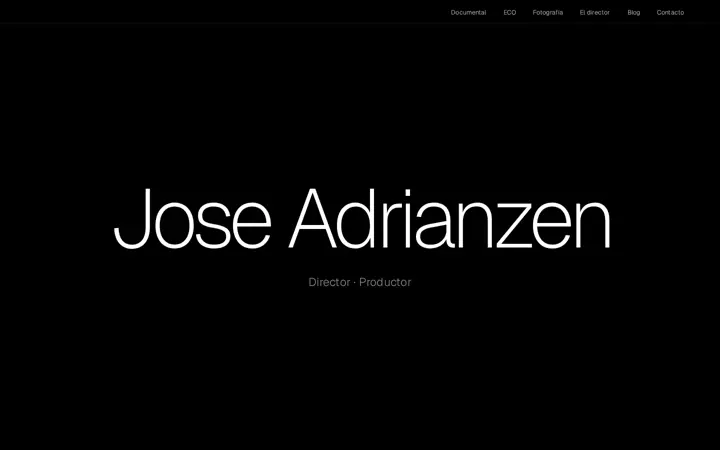
Apple oscuro · ligera · 43 kB
La página de producto de Apple reducida a lo esencial: una idea por pantalla sobre negro absoluto, cada imagen completa y centrada, y una línea corta debajo. El título del documental, que ya viene sobre negro, se funde con la página.
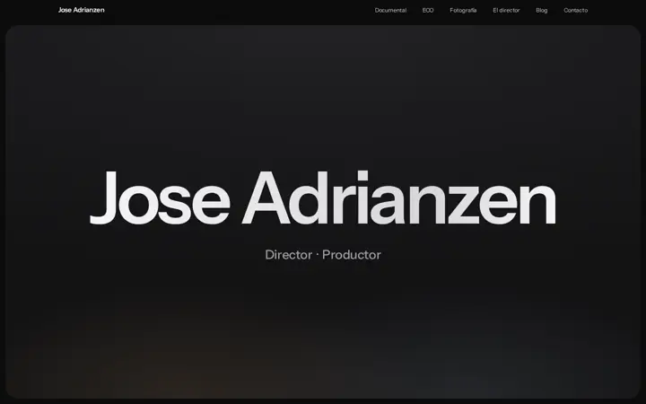
Apple oscuro · ligera · 57 kB
Cada obra se lanza como un producto en una página de Apple: lámina gris carbón con un degradado apenas visible, imagen grande, titular de tres palabras y especificaciones con líneas finas. Remata con una comparativa lado a lado del documental y ECO, como la página para comparar modelos.
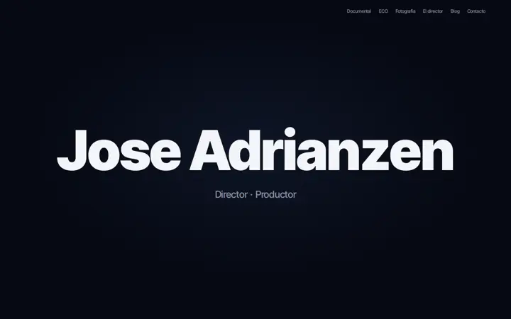
Apple oscuro · ligera · 44 kB
La web se recorre como una presentación en escenario: una frase gigante por pantalla (Tres años. Una mina. Ellas.) y, entre frase y frase, el fotograma a pantalla completa y completo. El scroll se detiene en cada diapositiva y un contador discreto marca por dónde va la función.
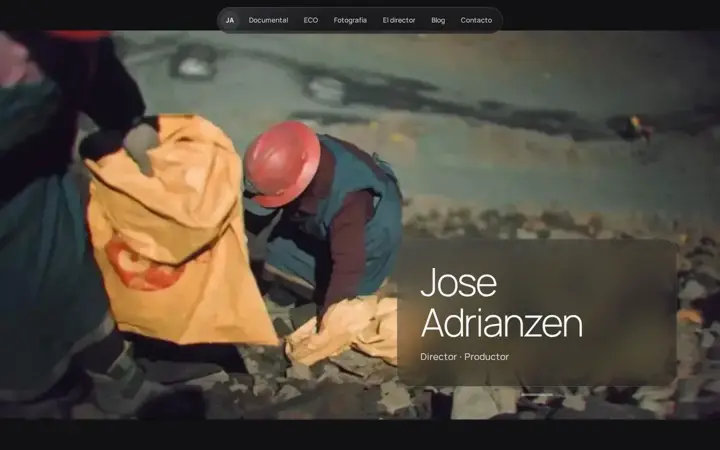
Apple oscuro · media · 49 kB
Ventanas translúcidas, como las de visionOS, que flotan sobre fotogramas completos: cada escena fija un fotograma entero en el fondo y los paneles de vidrio pasan por encima desenfocando sus colores. La navegación es una pastilla de vidrio flotante y las ventanas llevan su barra de agarre.
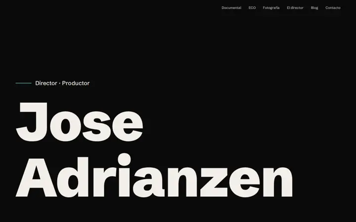
Apple oscuro · media · 51 kB
Como en el cuarto oscuro, cada imagen empieza latente, un fantasma gris casi invisible, y el scroll la revela: el afiche aparece por franjas, los fotogramas se abren desde un punto de luz, la puerta de ECO se abre desde el centro y el texto se enciende palabra por palabra. Secciones fijas con sticky y clip-path, al modo de las páginas de producto de Apple.
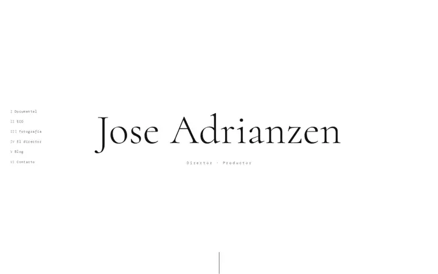
Minimal blanco atemporal · ligera · 40 kB
La web como una galería de paredes blancas: cada imagen cuelga sola, en díptico o en tríptico, con mucho aire y una cartela chica en mono. Cada sección es una sala numerada en romanos con su texto de sala sobre un eje central.
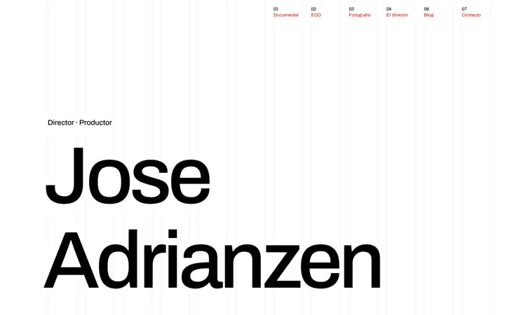
Minimal blanco atemporal · ligera · 38 kB
El estilo tipográfico internacional aplicado a la obra de un director: una grilla de 12 columnas que se ve de verdad, reglas negras de 1 px y números de sección 01 a 07 en el margen. Todo alineado a la izquierda, en blanco y negro, con el rojo suizo reservado para los enlaces.
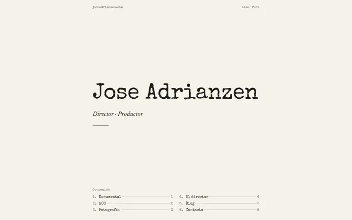
Minimal blanco atemporal · ligera · 38 kB
La web como una carpeta mecanografiada que Jose entrega en mano: cada sección es una hoja con folio tecleado, fichas con líneas de puntos y un sello de goma rojo para ECO. Todo vive en una sola medida de lectura de 62 caracteres, imágenes incluidas.
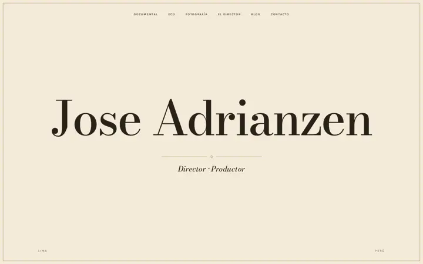
Minimal blanco atemporal · ligera · 41 kB
Una edición impresa en papel crema, como el programa de mano de una función de gala. Un marco fino de oro apagado rodea toda la página y respira con el scroll, mientras los títulos en Bodoni de alto contraste se centran sobre un filete con rombo.
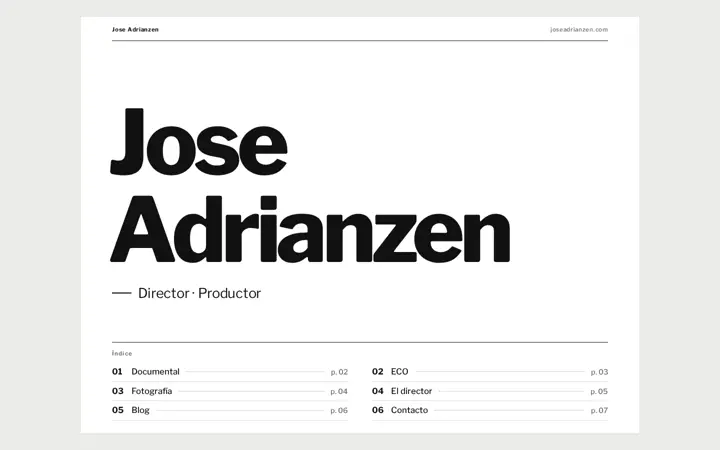
Minimal blanco atemporal · ligera · 44 kB
La web como el dossier de prensa que se manda a un festival: hojas blancas sobre una mesa gris, con cabecera corrida, número de sección en bloque negro y folio al pie. La portada lleva el nombre y un índice con números de página, y el documental abre con sus cuatro premios entre laureles dibujados.
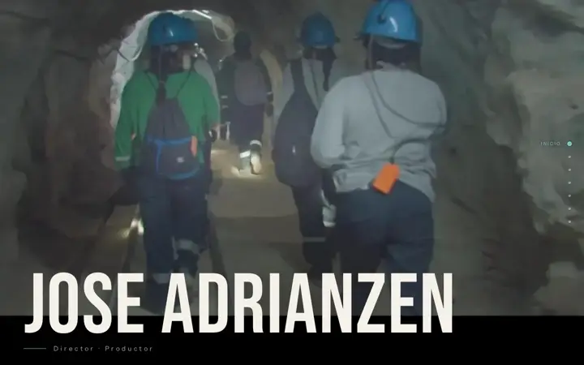
Cine inmersivo · ligera · 43 kB
La web es una sucesión de planos: cada sección abre con un fotograma completo a todo lo ancho, con barras negras cuando hace falta y nunca recortado. El título en Bebas Neue se monta sobre la imagen y cae sobre una franja negra donde vive el texto, como la banda de subtítulos.
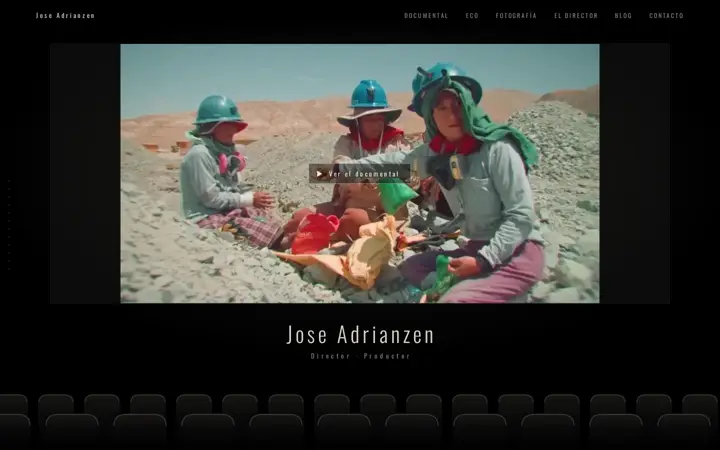
Cine inmersivo · ligera · 43 kB
Entrar a la web es entrar a una sala: las luces de sala se apagan en un fundido de 1,2 s y una pantalla 2.39:1 se enciende como un proyector con el póster del documental y el botón. Todo lo demás vive debajo como un programa de mano en Oswald 300, gris humo sobre negro, que se lee a la luz de la pantalla.
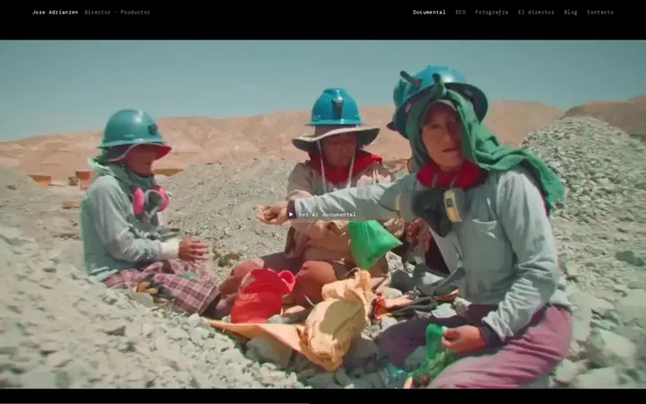
Cine inmersivo · ligera · 34 kB
Como en oliverlaxe.com, el reproductor del documental ocupa la portada entera y, mientras nadie lo toca, pasa en silencio una secuencia de fotogramas en fundido, como un tráiler mudo con su barra de avance. El nombre vive en una esquina en mono muy chico y todo lo demás baja en una sola columna sobria, blanco sobre negro.
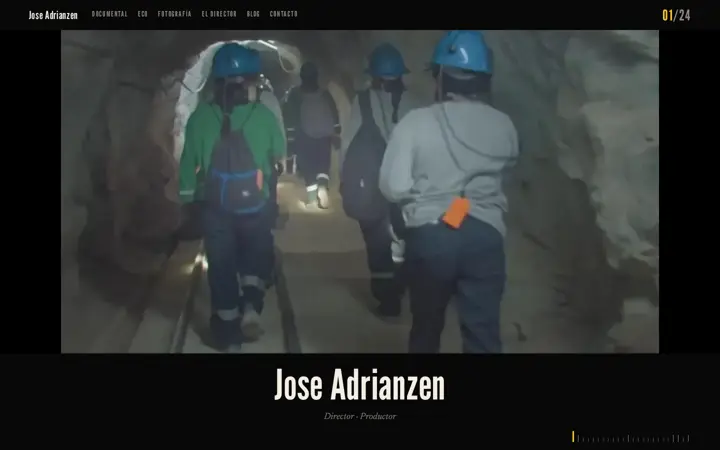
Cine inmersivo · ligera · 41 kB
Un segundo de cine: la web son 24 pantallas, como los 24 fotogramas de un segundo, y cada una se detiene con scroll-snap en un fotograma completo con un solo dato, un nombre, un premio o una frase. Entre imagen e imagen entran cartones negros como los intertítulos del cine mudo, con ritmo de montaje y contador 01/24.
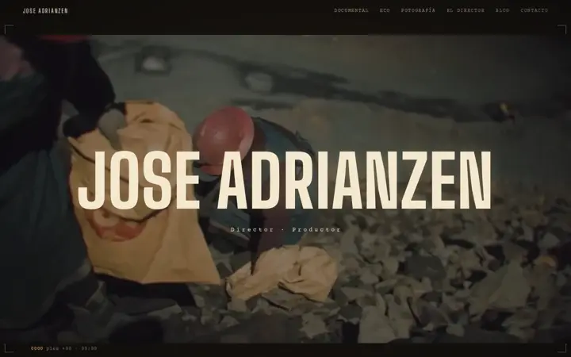
Cine inmersivo · media · 47 kB
La web se ve como una copia de 35 mm pasando por el proyector: arranca con la cola de arranque (3, 2, 1 y el barrido del círculo), un destello y la primera imagen. Encima viven los signos de la proyección, viñeta, grano, marcas de encuadre, la marca de cambio de rollo al final de cada sección y un contador de pies que avanza con el scroll.
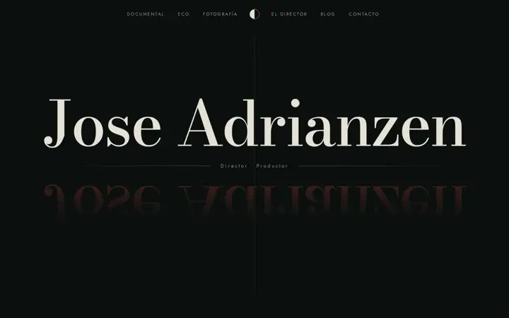
Thriller psicológico (ECO) · media · 50 kB
Un eje vertical recorre la página como la juntura de un espejo: cada sección se refleja en la siguiente, con el texto a la izquierda y luego a la derecha, y las galerías se arman en filas palíndromas. Los títulos llevan su reflejo en rojo sangre debajo, la otra vida que la casa de ECO esconde.
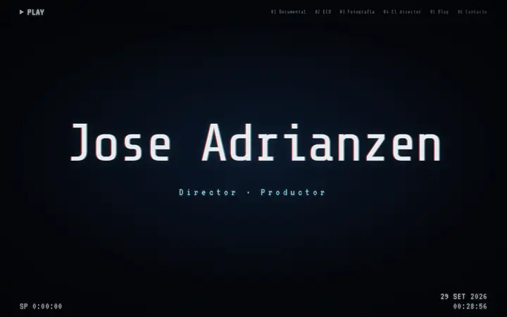
Thriller psicológico (ECO) · media · 56 kB
La web es una cinta VHS encontrada en la casa de ECO y reproducida en un monitor, con indicadores en pantalla que responden al scroll y un contador que llega a 0:13:12, la duración de ECO. Cada sección es un capítulo de la cinta y ECO aparece como una pantalla de SIN SEÑAL sobria, con el sello Aún sin estrenar.
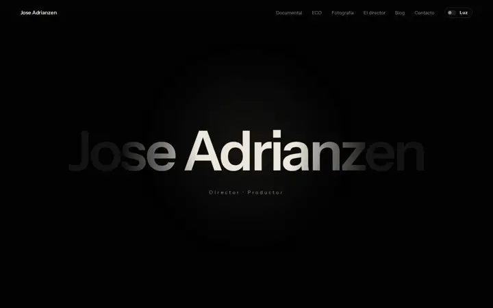
Thriller psicológico (ECO) · media · 47 kB
La página está casi toda a oscuras, como la casa de ECO de noche, y una linterna que sigue al cursor revela lo que hay debajo con una máscara radial, en móvil un haz fijo por el que pasa el contenido al bajar. Lo único que brilla por sí solo es el sello rojo de ECO, y un interruptor enciende la luz para leer con todo visible.
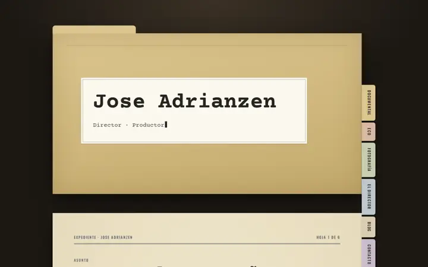
Thriller psicológico (ECO) · ligera · 45 kB
La web es la carpeta de archivo del psiquiatra de ECO sobre un escritorio en penumbra: tapa de cartulina con la etiqueta escrita a máquina y hojas amarillentas con formularios impresos llenados a máquina. Sellos rotados (CONFIDENCIAL, AÚN SIN ESTRENAR), fichas grapadas y fotos pegadas con esquinas que nunca tapan la imagen, en tono sobrio.
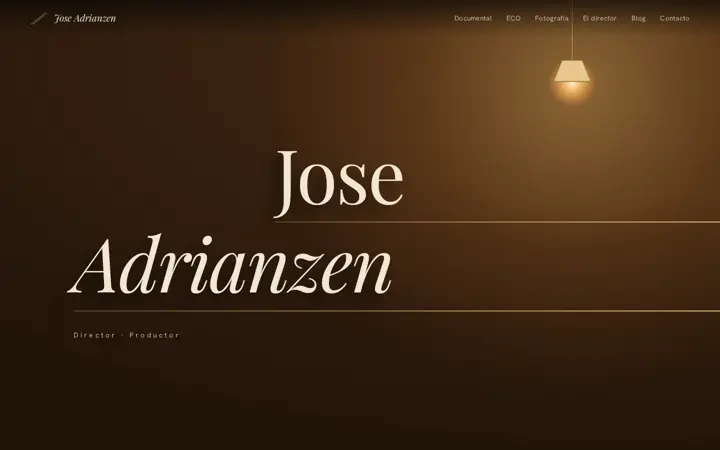
Thriller psicológico (ECO) · media · 50 kB
Bajar la página es bajar la escalera de la casa de ECO: cada sección abre con un peldaño que tiene su borde encendido y su sombra larga, y los peldaños bajan hacia la izquierda, lejos de la lámpara que cuelga arriba a la derecha. Al bajar, la luz cálida se apaga y se enfría, el fondo pasa de ámbar a azul, y las fotos cuelgan en la pared como cuadros con marco dorado.
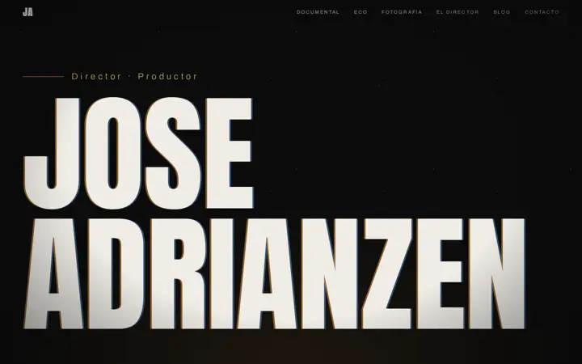
Documental: polvo y mina · ligera · 55 kB
Evolución directa de la web actual: negro mate, grano fijo y Anton con contorno cromático. La jerarquía cambia: el documental es la pieza central a doble ancho y sus premios y selecciones se leen como la franja de laureles de un afiche.
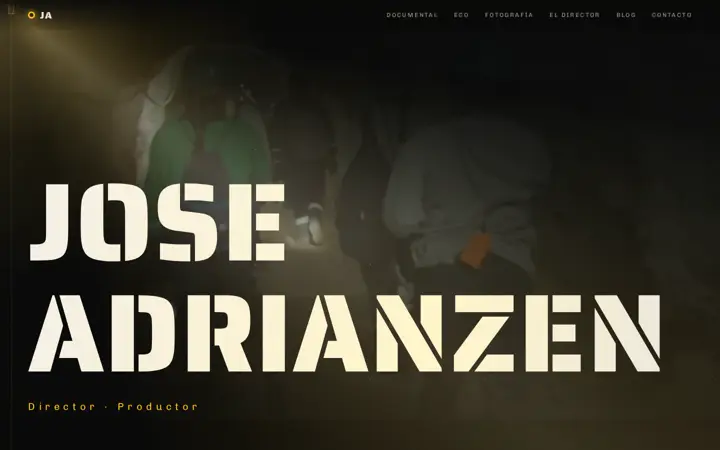
Documental: polvo y mina · ligera · 54 kB
Bajar a la mina con una linterna de casco: la página es un socavón negro y la única luz es un haz amarillo fijo en la esquina superior. Cada foto está a oscuras hasta que entra en pantalla y la linterna la alumbra.
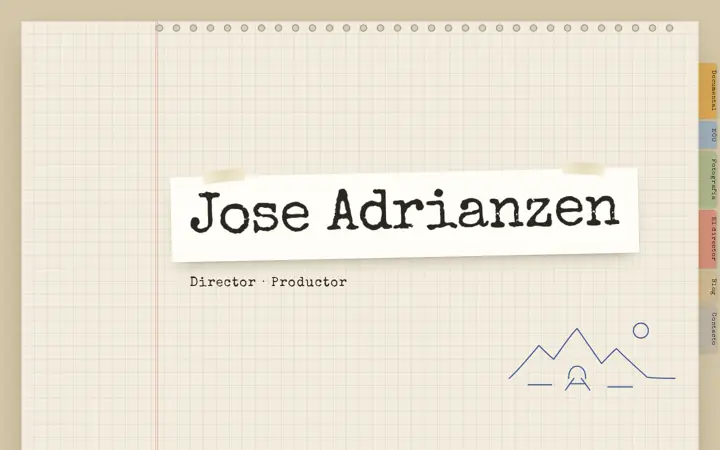
Documental: polvo y mina · ligera · 56 kB
El cuaderno de rodaje de Jose: una hoja cuadriculada sobre el escritorio, con margen rojo y pestañas separadoras, todo escrito a máquina. A mano solo se escribe en los márgenes, las fotos van pegadas con cinta y los fotogramas como tiras de película.
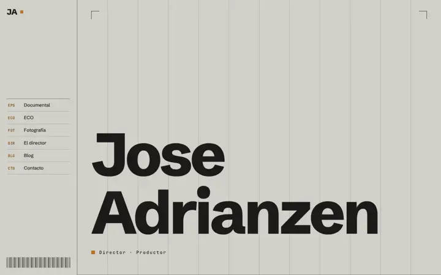
Documental: polvo y mina · ligera · 57 kB
La obra de Jose tratada como un fondo de archivo fílmico: cada foto es un registro con código de rollo, fecha, lugar y medidas, y los premios y selecciones son un libro de registro. Donde el dato no existe se anota como en archivo (s. f., s. l.) y nunca se inventa.
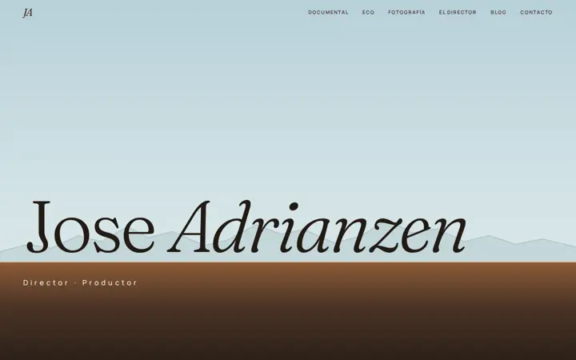
Documental: polvo y mina · media · 55 kB
La web se arma sobre la frase de la sinopsis: la película es un puente entre ellas y el mundo. En el centro del documental dos columnas se cruzan con el scroll, la mina sobre tierra y los quince festivales con su ciudad sobre cielo, mientras entre ambas se tiende un puente colgante dibujado con GSAP.
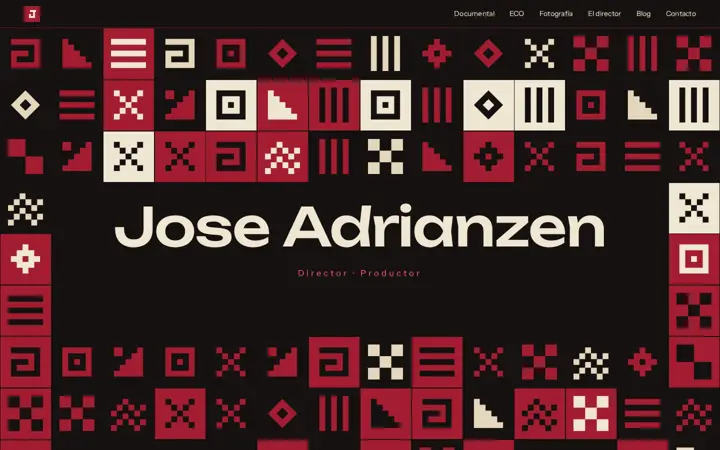
Andino textil · ligera · 52 kB
Los tocapus incas como sistema: la portada es un unku que se teje fila por fila con cuadrados de motivos geométricos propios y deja un vacío negro para el nombre. Cada sección tiene su tocapu emblema y franjas de tocapus hacen de divisores.
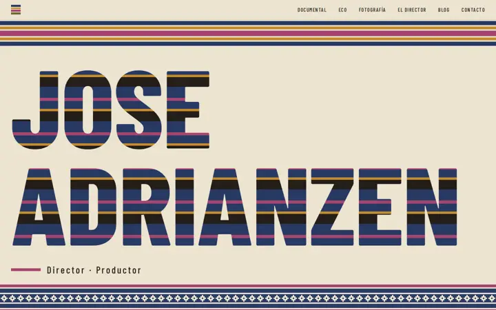
Andino textil · ligera · 47 kB
La página es una lliclla: pampas lisas de color crudo donde vive el contenido, separadas por listas de tinte natural de 8 a 24 px que se tejen de lado a lado al entrar. El nombre de la portada lleva franjas tejidas dentro de las letras y aparece pasada por pasada.
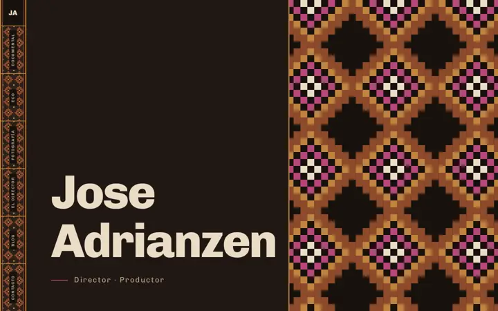
Andino textil · ligera · 45 kB
La navegación es un chumpi, una faja tejida fija a la izquierda donde cada tramo es una sección y el tramo activo cambia su tinte a fucsia. La portada es un paño de rombos escalonados que se teje pasada por pasada junto al nombre.
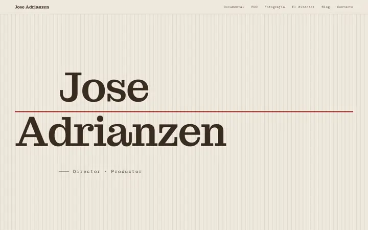
Andino textil · media · 41 kB
La página es un telar de cintura: detrás de cada sección corre una urdimbre de hilos verticales que llegan flojos y se tensan al entrar. Los títulos se tejen letra por letra, entrando por arriba o por abajo como la trama, y un hilo rojo cruza bajo cada uno.
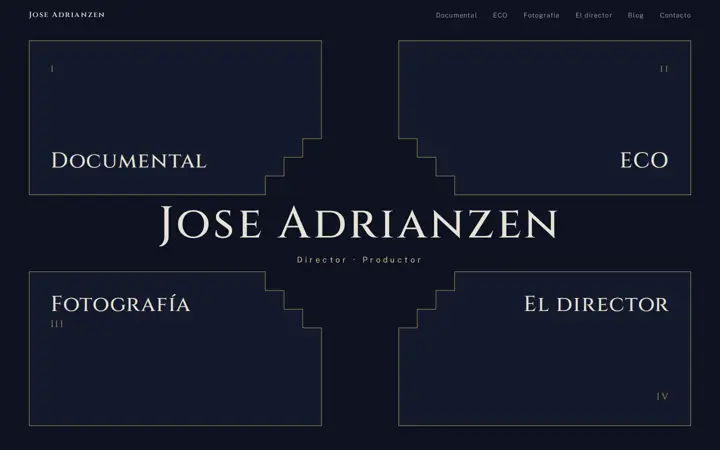
Andino textil · ligera · 43 kB
La chakana, la cruz andina escalonada, como estructura: cuatro cuadrantes (Documental, ECO, Fotografía, Director) con su esquina interior cortada en tres escalones dejan entre ellos el vacío de la cruz, y el nombre vive en su brazo horizontal. El resto del sitio hereda el escalón como marco, sello y divisor, siempre en el marco y nunca en la foto.
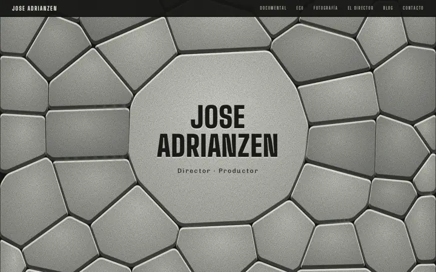
Andino piedra y altura · ligera · 55 kB
La web es un muro inca de Cusco: la portada es un aparejo poligonal cuya piedra central tiene exactamente doce ángulos y lleva el nombre grabado. Cada sección es una hilada y cada pieza de contenido un bloque que encaja con juntas de 2 px, con ECO en el lado del muro que queda en sombra.
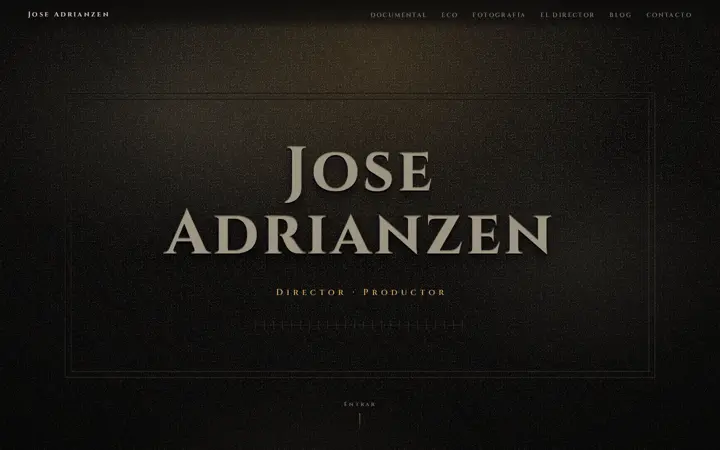
Andino piedra y altura · media · 47 kB
La web son las galerías subterráneas de Chavín de Huántar: granito casi negro, una lámpara de aceite que recorre el templo y títulos labrados en relieve cuya sombra cambia de lado según dónde está la luz. Los premios son estelas, las selecciones se numeran en romanos como una inscripción y ECO es la cámara interior, lo más oscuro del templo.
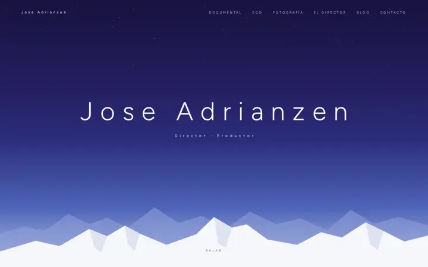
Andino piedra y altura · ligera · 46 kB
La portada es el cielo a 4000 metros, azul profundo casi violeta que se abre hacia el horizonte, y una línea de cordillera nevada en SVG separa el cielo del contenido. Debajo de la nieve la web es blanca, con mucho aire y silencio, y ECO es la noche en la montaña.
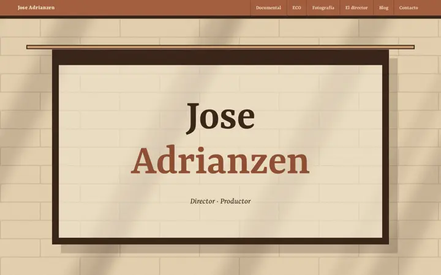
Andino piedra y altura · ligera · 43 kB
Una casa de adobe de la sierra a mediodía: muros de barro con hiladas de adobe, sombras de vigas que cruzan en bandas diagonales suaves y se mueven como el sol, vanos con marcos gruesos y rectos. Cada sección es un cuarto con su dintel de terracota, y ECO es el cuarto interior con la luz de una sola ventana.
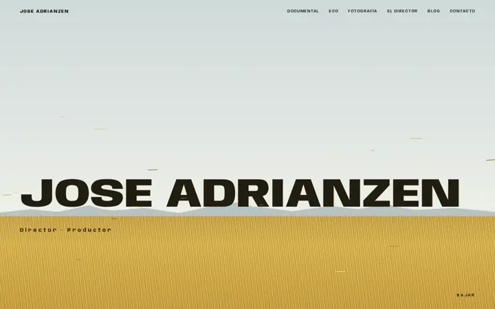
Andino piedra y altura · media · 46 kB
La puna a 4500 metros: un mar de ichu amarillo bajo un cielo enorme y pálido, con el horizonte muy bajo y el nombre apoyado sobre él al 70 % de la pantalla. Briznas de paja cruzan la portada con el viento, los títulos se estiran a lo ancho como el paisaje y ECO es la tormenta que cae sobre la pampa.
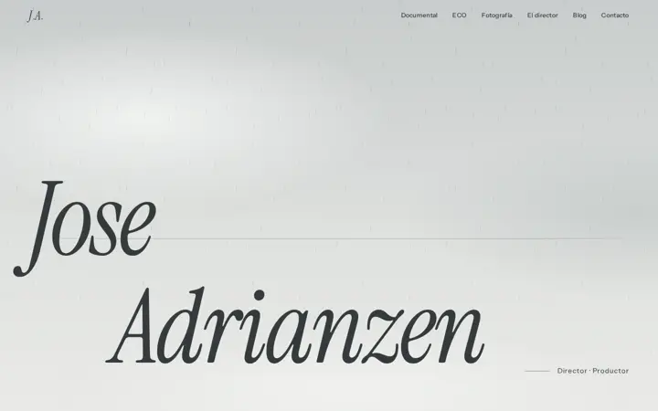
Limeño · ligera · 52 kB
Lima bajo el cielo panza de burro: un fondo gris perla casi plano donde el nombre se condensa desde la bruma mientras cae una garúa fina. Cada imagen se desempaña al entrar en la vista y ECO llega como una franja de tarde con bordes difusos.
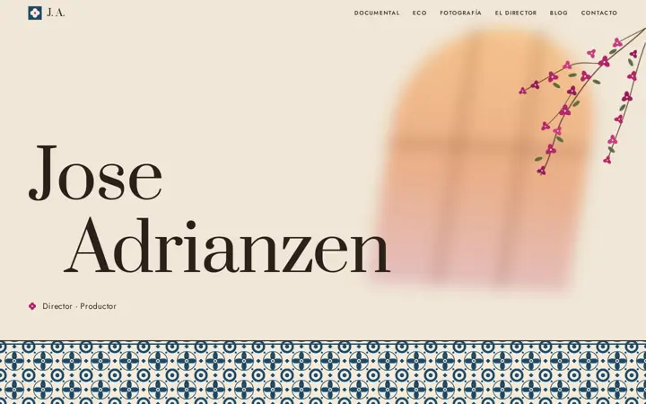
Limeño · ligera · 59 kB
La web es una casona republicana de Barranco a la hora del atardecer: muros encalados, zócalo de azulejo, buganvilla que cae sobre la pared y la luz naranja del malecón que entra por una ventana en arco. Cada sección es una habitación pintada de otro color y entre una y otra corre una cenefa de azulejo en dos colores.
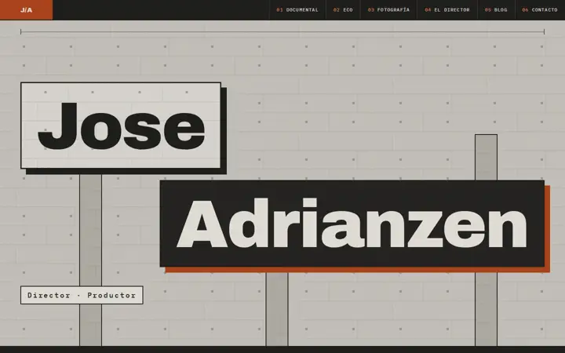
Limeño · ligera · 50 kB
La web es un edificio brutalista limeño de los setenta en obra: losas de cemento apiladas sobre pilotes, tablas de encofrado y agujeros de amarre marcados en la superficie. Todo es ángulo recto y cada sección es un piso numerado como en un plano de obra.
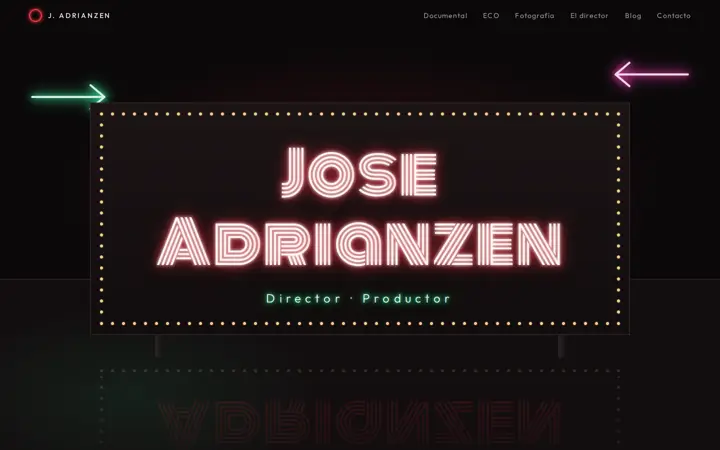
Limeño · media · 50 kB
Lima de noche: la marquesina de un cine de barrio con focos que corren anuncia el nombre del director y el letrero de neón se refleja en el asfalto mojado. Solo los títulos son neón, el resto es sobrio como la vereda.
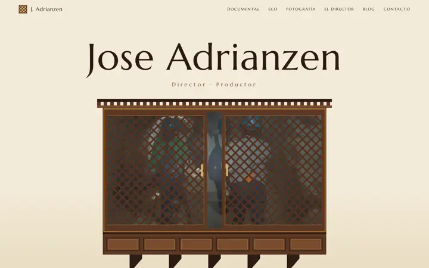
Limeño · ligera · 51 kB
La web es un balcón limeño de cajón visto desde la calle, y la celosía de madera es la máscara por donde se mira: en la portada un fotograma del documental está detrás de dos hojas de celosía que se abren al bajar. El resto de la casa es crema y madera, colonial sin ser antiguo, con simetría, molduras rectas y mucho aire.
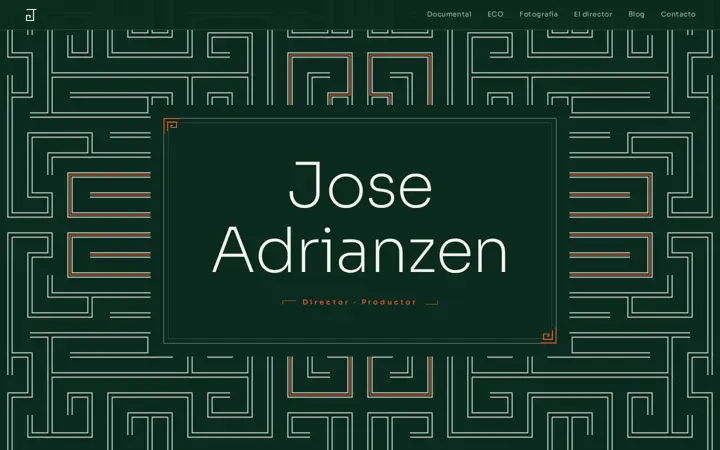
Selvático amazónico · ligera · 51 kB
El kené shipibo leído como sistema lineal: un tejido de líneas en ángulo recto crece rama por rama desde el centro de la portada y rodea el nombre como si lo bordara. Cada sección vive dentro de un marco de tela con doble línea, cenefa de ganchos y esquinas en espiral, todo con geometría propia generada con una semilla fija.
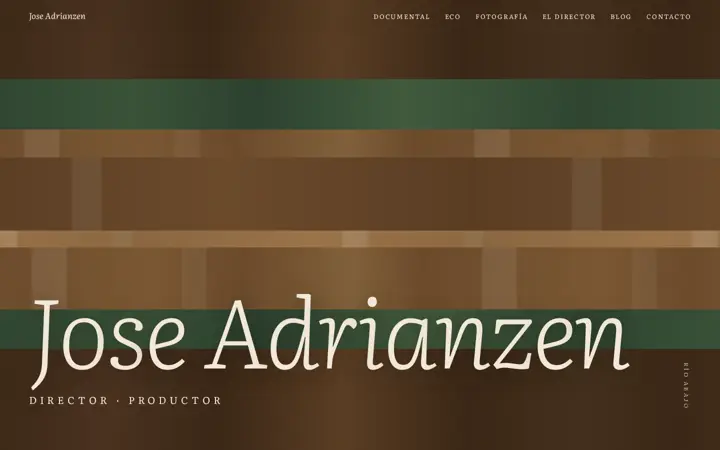
Selvático amazónico · media · 47 kB
El río como eje de la página: la portada es un río visto desde arriba, bandas de agua marrón y orilla verde que corren lento de derecha a izquierda. Cada sección es un tramo, con el texto en la orilla y las imágenes bajando por una corriente horizontal propia.
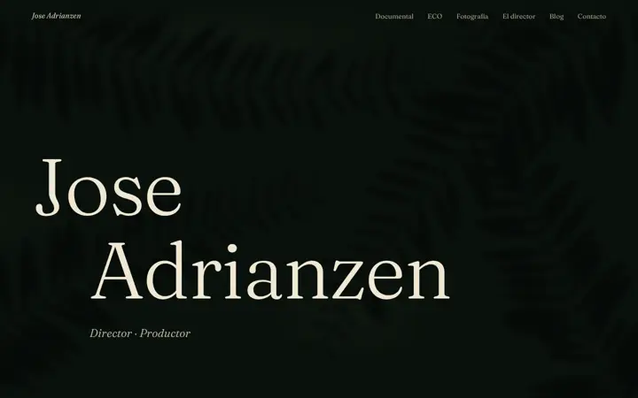
Selvático amazónico · media · 43 kB
Estar bajo el dosel del bosque: una capa fija de luz y, encima, sombras de frondas dibujadas en SVG con semilla fija que se mecen muy lento. Al bajar por la página pasa el día y la luz cambia de dorada a blanca verdosa, ámbar y verde de noche.
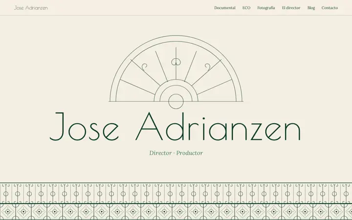
Selvático amazónico · ligera · 48 kB
Una fachada de la belle époque amazónica: marfil de muro, verde botella de rejas y azulejos, y el hierro forjado dibujado como líneas finas. La portada es un portal con abanico de hierro, baranda de balcón y zócalo de azulejos, todo dibujo propio en SVG.
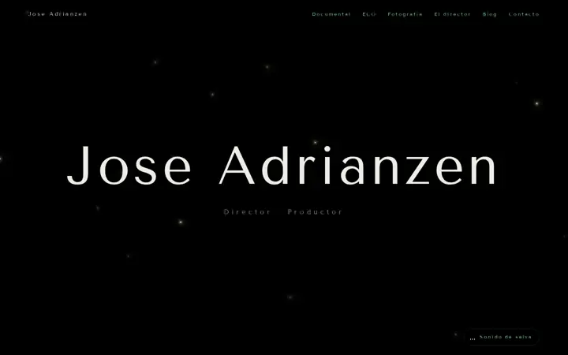
Selvático amazónico · media · 43 kB
La selva de noche: negro total, luciérnagas que se encienden y se apagan a destiempo, y texto muy fino como leído con poca luz. Un botón opcional enciende un rumor de selva hecho con Web Audio, sin archivos y nunca solo.
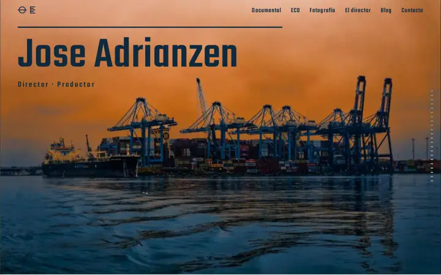
Costa y puerto · ligera · 52 kB
El puerto del Callao al atardecer convertido en sistema gráfico: la foto de las grúas abre la página completa y el nombre se estiba en el cielo naranja como una carga que baja de la pluma. Cada sección es una grúa numerada, los festivales son contenedores en un patio que se recorre de lado y la ficha técnica es la placa remachada de un contenedor.
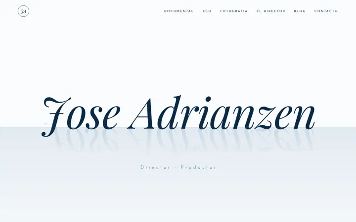
Costa y puerto · media · 49 kB
Una costa en blanco y azul que se mueve como la marea: una línea de horizonte fija cruza toda la página y sube y baja con el scroll, con un velo de agua pálido debajo. El nombre nace sobre esa línea y se refleja en el agua, las imágenes flotan a distintas profundidades y ECO es el único tramo en aguas hondas.
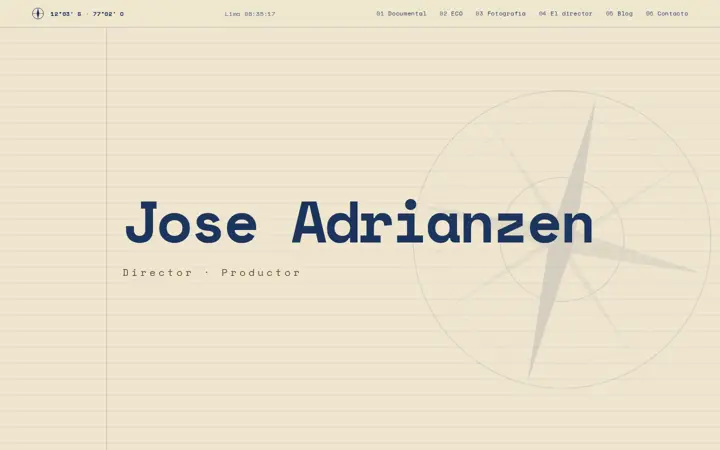
Costa y puerto · ligera · 45 kB
El sitio es el cuaderno de bitácora de un barco que zarpa de Lima: cada sección es una entrada con su marca de tiempo y su rumbo, y las coordenadas de Lima son la marca. Las fotos se pegan como registros numerados y los festivales son los puertos visitados, anotados en una tabla de escalas.
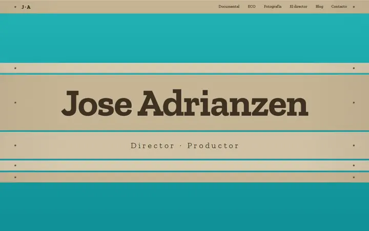
Costa y puerto · ligera · 40 kB
La página es un muelle de madera que entra al mar: todo el contenido va sobre tablones horizontales con juntas y clavos a la vista, y entre tablón y tablón se ve el turquesa del agua. Donde el muelle se abre, las fotos se asoman sobre el mar siempre completas, y los festivales son once tablones que se estrechan hacia el horizonte.
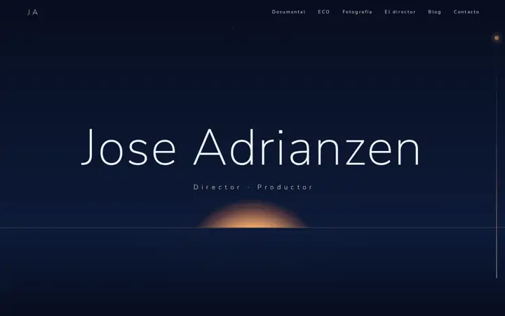
Costa y puerto · ligera · 40 kB
Bajar por la página es ver amanecer sobre el mar: arriba es noche con estrellas y el primer filo de sol en el horizonte, el documental y ECO transcurren en la hora azul, la fotografía es el momento en que el cielo se enciende de naranja y el director, el blog y el contacto ya están en la luz blanca de la mañana. Todo respira lento.
Índice o archivo · ligera · 50 kB
La web entera es una filmografía impresa en tabla: premios, selecciones, equipo, reparto y fotos son filas con sus columnas de festival, lugar, año y tamaño. Las fotos entran como filas con miniatura y al pasar el cursor se abren en una vista previa flotante que sigue al puntero, con el nombre del archivo y sus píxeles.
Índice o archivo · ligera · 46 kB
La web es un índice numerado de 01 a 87: cada pieza de contenido (un párrafo, un premio, un festival, una foto) es una entrada con su número grande en mono en el margen, como el índice de un catálogo razonado. No hay imágenes decorativas, las fotos son entradas del índice que se abren a tamaño completo.
Índice o archivo · ligera · 53 kB
La web como catálogo de cargo.site: cada pieza de la obra de Jose es una miniatura del mismo alto, en una caja gris que muestra la imagen completa, con su código y su texto debajo. Cada miniatura abre un panel lateral con la pieza grande, su ficha y el paso a la anterior o la siguiente.
Índice o archivo · ligera · 43 kB
La web leída como el paquete de un DCP: todo es metadato clave y valor, como la lista de composición de una copia de cine (DIRECCIÓN, FORMATO, DURACIÓN, PREMIOS). Cada obra es una composición con su identificador y las imágenes entran como adjuntos con código, píxeles y tipo.
Índice o archivo · ligera · 59 kB
La obra de Jose como una base de datos abierta: cada párrafo, premio, festival, fotograma o vía de contacto es una fila con ID, fecha, tipo, campo y valor. Una consola filtra de verdad por sección, por tipo y por texto, escribe la consulta y dice cuántas filas devuelve y a qué hora.
Tipografía cinética y brutalista · ligera · 55 kB
La marquesina de un cine de estreno hecha web: la letra es la imagen y el nombre de Jose, en Anton a 33 vw, ocupa dos pantallas y corre de lado mientras bajas. Entre sección y sección pasan cintas continuas con los festivales y las ciudades que recorrió Entre polvo y sueños, y cada sección abre con su nombre al 20 vw a sangre.
Tipografía cinética y brutalista · media · 48 kB
Una imprenta de tipos móviles: cada título se compone letra por letra al entrar, como un cajista que arma la línea, y se asienta con un rebote mínimo sobre su regleta negra. Papel blanco, tinta negra y en cada sección una sola palabra que se imprime en rojo al final.
Tipografía cinética y brutalista · ligera · 42 kB
Un cartel de agitación pegado en la calle: rojo y negro, cajas con bordes de 4 px y la letra como única imagen de la portada. Sin gracia a propósito, pero con el ritmo de una planilla impresa a golpes, donde cada sección es una fila numerada.
Tipografía cinética y brutalista · media · 41 kB
La letra respira: una sola fuente variable, Fraunces, cuyo grosor sigue al lector. El nombre de Jose nace en un trazo de 100, casi un hilo, y engorda hasta 900 mientras bajas, como una imagen que se revela en el baño químico.
Tipografía cinética y brutalista · ligera · 44 kB
Una revista de cine japonesa leída en castellano: los títulos y las etiquetas corren en vertical como columnas de tinta, de derecha a izquierda, sobre mucho blanco. Las imágenes cuelgan de los títulos con un hilo fino y un clavo índigo, como rollos colgados en una pared.
Editorial revista de cine · ligera · 50 kB
La web es un número especial de una revista de cine dedicado a Jose Adrianzen, con tapa amarilla al modo de los viejos Cahiers y la mancheta con su nombre a todo el ancho. Adentro se lee como revista: dossier del documental, estreno pendiente de ECO en páginas negras, portafolio, entrevista, notas y correspondencia.
Editorial revista de cine · ligera · 48 kB
Una monografía en blanco y negro puro, como un número de revista de moda dedicado a un cineasta: todo es tinta negra o papel blanco. El color vive escondido dentro de las fotos, que aparecen en gris y lo recuperan con un fundido lento al pasar el cursor, o al cruzar el centro de la pantalla en táctiles.
Editorial revista de cine · ligera · 47 kB
La web es un diario impreso de gran formato con una sola edición dedicada a Jose Adrianzen. Cabecera con la fecha del día, mancheta, filetes dobles, columnas de a tres con capitular, cartelera de festivales y clasificados para el contacto.
Editorial revista de cine · ligera · 44 kB
La web entera se lee como una crítica de cine larga en una revista seria, con cada obra como un apartado numerado. Las estrellas cuentan premios reales, las citas destacadas van a doble tamaño, los datos viven en notas al margen y al final va la firma.
Editorial revista de cine · ligera · 48 kB
La web es un libro de cine sobre Jose Adrianzen apoyado en una mesa oscura: tapa en tela con lomo y letras doradas, portadilla, índice y capítulos numerados. Cada capítulo avanza en pliegos de dos páginas con cabecera corrida, folio al pie, márgenes asimétricos y las imágenes como láminas a página completa.
Galería horizontal · media · 51 kB
La web es un tren de siete vagones que avanza de lado: la rueda vertical empuja el tren hacia la izquierda y cada sección es un vagón con su color de tierra y su carga acomodada en compartimentos. El nombre llega letra por letra desde la derecha, como vagones que se enganchan, y el rótulo de cada vagón se queda pegado a la izquierda mientras pasa.
Galería horizontal · ligera · 54 kB
La web es la hoja de contactos de un fotógrafo: sobre papel negro, cada sección es una tira de negativo perforada con sus cuadros numerados que se recorre de lado. Un marcador de cera roja encierra el cuadro elegido, que aparece ampliado como copia de trabajo con su margen de papel, y todo el texto está mecanografiado como las notas de un archivo de rodaje.
Galería horizontal · ligera · 41 kB
La web es una mesa de montaje que nunca se detiene: entre secciones cortas de texto corren rollos infinitos de fotogramas, uno hacia cada lado, como película pasando por la moviola. Al pasar el cursor el rollo se detiene y un clic en las fotos las abre completas.
Galería horizontal · media · 52 kB
La web es la mesa de luz de un montajista: sobre un vidrio blanco que brilla desde abajo quedan diapositivas sueltas en sus marcos, con su rótulo, y el texto vive en fichas blancas de archivo con su renglón rojo. Las diapositivas se arrastran como sobre una mesa real y un clic las lleva al visor a tamaño completo.
Galería horizontal · ligera · 46 kB
La web se recorre como una serie de panorámicas: cada sección es una fila que se desliza de lado con imanes, como una cámara que panea, y el título queda fijo a la izquierda como el rótulo de un rollo. Las imágenes van siempre completas, del alto de la fila o del ancho que quepa.
WebGL justificado (pesadas) · pesada · 63 kB
Miles de motas de polvo flotan en una luz rasante ocre en la portada y se apartan o arremolinan cuando el cursor las cruza, como el aire de las pampas del documental. Después la página se asienta como el polvo: una hoja clara y sobria que sube por encima de la portada como un telón.
WebGL justificado (pesadas) · pesada · 64 kB
La portada es un muro en perspectiva con los 6 fotogramas y las 8 fotos de rodaje del documental, completos y sin recorte, que la cámara recorre de punta a punta con el scroll como un travelling lateral. El cuadro que queda al centro se enciende en color y los demás esperan en gris, con su pie en la parte baja.
WebGL justificado (pesadas) · pesada · 55 kB
El calor de la pampa hecho imagen: el fotograma de las tres mineras en la portada tiembla como el aire sobre la tierra caliente. Cada foto de la página ondula como un espejismo cuando el cursor pasa sobre ella, con un shader de desplazamiento sobre planos con la proporción exacta de cada imagen.
WebGL justificado (pesadas) · pesada · 57 kB
La portada es una copia en proyección: los fotogramas del documental pasan uno tras otro con grano de película vivo, aberración cromática, parpadeo del obturador, temblor de ventanilla, rayas y motas, todo por postproceso. El resto de la página es la lata y la hoja de laboratorio de esa copia, con rollos numerados, tiras perforadas y hoja de contactos.
WebGL justificado (pesadas) · pesada · 61 kB
Entrar al socavón: la portada es la bocamina de noche con el nombre a plantilla y, al bajar, un túnel de roca con cuadros de madera, rieles y lámparas colgadas, alumbrado por la luz del casco, que se recorre con el scroll. Al final la salida se abre en luz y la luz se vuelve la página, que es la señalización de la mina.
Retro peruano · ligera · 49 kB
La web es un afiche chicha impreso sobre negro: el nombre y las obras se rotulan en Bungee con el degradado de dos tintas de los carteles de Lima, amarillo a fucsia y verde a amarillo. Todo lo demás es sobrio, con jerarquía limpia, versalitas finas y mucho negro alrededor para que cada línea respire.
Retro peruano · ligera · 58 kB
La web es la fachada de un cine de barrio limeño de los ochenta, de noche: una marquesina de panel blanco iluminado con letras móviles negras anuncia el nombre y las obras, rodeada de bombillas que corren. Adentro está el vestíbulo, con la vitrina del afiche, la cartelera con puntos guía, el programa de mano del director y boletos de colores para el blog y el contacto.
Retro peruano · media · 53 kB
La web es la cinta de video casero de la familia: imagen cálida y lavada por los años, fecha y contador en la esquina, PLAY al entrar y REC al final. Cada sección es una cinta con su etiqueta de franjas de colores y la franja de tracking cruza la pantalla cada tanto como un recuerdo que tiembla.
Retro peruano · ligera · 50 kB
La web es un afiche serigrafiado a dos tintas, azul y naranja, sobre papel crema con fibra. Cada título se imprime dos veces con el registro corrido y las fotos salen en duotono con la tinta naranja desplazada, y recuperan su color al pasar el mouse.
Retro peruano · media · 49 kB
La web se ve dentro de un televisor de tubo: al encender aparecen un segundo las barras de color de prueba y luego la señal, Jose Adrianzen en vivo. Cada sección es un canal, y al pasar de una a otra la pantalla se llena de ruido un instante, como cuando se giraba la perilla.
Lujo clásico · ligera · 48 kB
La web es una invitación de gala en negro y oro: un pasepartú fijo con marco doble fino enmarca la ventana y la obra aparece centrada, con mucho aire, como en un programa de ceremonia. Los premios viven dentro de laureles dibujados a línea que crecen desde el tallo al entrar, y nada brilla: oro plano, líneas de un píxel y tipografía.
Lujo clásico · ligera · 51 kB
La web es la fachada y el programa de un palacio de cine de los años treinta: un abanico de rayos dorados se abre detrás del nombre como el sol de un proscenio y cada sección tiene su letrero vertical de marquesina, como los viejos cines de Hollywood. La obra se presenta en placas con remate escalonado, tiras de película y marcos con esquinas de latón, en negro y champán.
Lujo clásico · ligera · 48 kB
La web es el catálogo de un festival de clase A en noche de gala: sobre un azul noche se levanta una palma dorada abstracta, hoja por hoja, y la obra se presenta como las películas de la competencia. Cada premio se escribe como un laurel de texto, con dos ramas de palma a los lados del nombre del galardón.
Lujo clásico · ligera · 45 kB
La web es una sala de cine antigua con las luces bajas: al entrar se recoge un telón de terciopelo borgoña y el nombre queda bajo un cono de luz. El recorrido es un programa de función en actos, sobre un terciopelo hecho con degradados radiales suaves y un brillo que sigue al puntero como la linterna de un acomodador.
Lujo clásico · ligera · 47 kB
La web es la página de Jose en el catálogo impreso de un festival: papel blanco roto, tinta gris, cabecera corrida con la sección y el folio, ficha en dos columnas, sinopsis a dos columnas de texto, biofilmografía y contacto de ventas al cierre. Es lujo por contención, como un libro bien compuesto.
Perú y el mundo · media · 76 kB
Una carta de rutas nocturna con Lima en el centro exacto del mundo: en la portada las catorce rutas del documental salen de Lima y se dibujan hacia cada festival. En la sección del documental el mismo mapa se vuelve un índice interactivo donde cada punto abre la ficha de su festival.
Perú y el mundo · media · 74 kB
El recorrido del documental leído como una terminal de aeropuerto: una pared de relojes con la hora real de cada ciudad de festival y tableros de salidas con letras de paleta que giran. Cada sección se señaliza con un letrero amarillo, número de puerta y pictograma propio.
Perú y el mundo · ligera · 55 kB
La web es el pasaporte del documental: tapa verde con letras de oro, hojas con marca de agua y un sello de tinta circular y rotado por cada festival, con ciudad y año. ECO tiene su visado pendiente y el director ocupa la página de datos con su zona de lectura mecánica.
Perú y el mundo · ligera · 44 kB
Una sola línea azul sale de Lima y recorre toda la página como la ruta del documental, pasando por cada sección como por una estación. En el recorrido se detiene en cada ciudad donde la película fue premiada o seleccionada, agrupadas en 2025, 2026 y las que no tienen año, y al final vuelve a Lima.
Perú y el mundo · ligera · 55 kB
Cada festival le mandó una postal al documental: quince postales llegan a Lima, con un fotograma o una foto de rodaje completa al frente y, al dorso, la escritura a mano, la estampilla con el año, el matasellos de la ciudad y la dirección de Jose Adrianzen. Se voltean al pasar el cursor o al tocarlas, y la portada y el contacto son sobres de correo aéreo.
Fluido premium ligero · media · 47 kB
Toda la web se desliza con inercia, como un travelling lento sobre rieles, y cada imagen entra como un plano que se abre desde una línea de luz, igual que un obturador. El nombre gigante lleva un fotograma del socavón dentro de su primera línea.
Fluido premium ligero · ligera · 48 kB
La web es un cine pequeño con cinco salas, cada una en su propia página (documental, eco, fotografia, director, contacto), y pasar de una a otra es un fundido encadenado que hace el navegador solo, sin JavaScript. La cabecera se queda quieta, el punto de la sala activa se desliza entre enlaces y el título de cada sala sube como un intertítulo, mientras el index hace de vestíbulo con todo el contenido.
Fluido premium ligero · ligera · 47 kB
La web es el programa de mano de un festival, tinta negra sobre papel crema, y todo lo que se mueve lo mueve el propio scroll, sin JavaScript salvo el reproductor. Los títulos se entintan al entrar (su peso pasa de 200 a 800), las fotos se revelan de blanco y negro a color como una copia en la cubeta y el nombre de la tapa se adelgaza al salir.
Fluido premium ligero · ligera · 46 kB
La página inhala y exhala: todo aparece con fundidos de 900 ms y curvas suaves en los dos extremos, nada salta, y el nombre de la portada exhala mientras entra en foco. El único color propio es el naranja del casco de las mineras, que sale del fotograma que abre la página y vuelve como un punto que late despacio.
Fluido premium ligero · ligera · 43 kB
Toda la web es una sola tira de película negra que baja por una página crema, con sus perforaciones a los lados, y cada sección lleva un rótulo pegajoso que se apila arriba al pasar. Los rótulos van del crema al negro como una cuña de grises de laboratorio, así que al bajar se forma una franja con los tonos de las secciones ya vistas.
Interactivo narrativo · media · 59 kB
La web se lee como una película en tres capítulos (la mina, la casa de ECO y el director) con un intermedio de fotografía y un epílogo. En cada capítulo el fotograma queda fijo a pantalla completa, entero y con barras de cine, y el texto sube por encima en tarjetas de papel que cambian el fotograma y su pie al llegar al centro.
Interactivo narrativo · media · 61 kB
La navegación es una claqueta copiada de la que se usó en el rodaje de ECO, con pizarra blanca, palos con carta de color y campos escritos a plumón. Cada sección es una escena y cada bloque una toma, y al pasar de una a otra la claqueta se abre, anota el número nuevo y se cierra de golpe, con chasquido solo si el visitante marca Sync.
Interactivo narrativo · ligera · 41 kB
La portada es un umbral con dos puertas: por la mina se entra al documental y la página se tiñe de ocre, por la casa se entra a ECO y todo se vuelve azul verdoso. La elección reordena las secciones y la paleta con una clase en body, y se puede cambiar de puerta desde la barra en cualquier momento.
Interactivo narrativo · media · 49 kB
La web es una sala de montaje: abajo vive la línea de tiempo de un programa de edición con pistas de video, audio y títulos, un clip por sección. El cabezal rojo se arrastra y mueve la página, y el scroll lo hace avanzar con código de tiempo en vivo.
Interactivo narrativo · media · 42 kB
La progresión de luz de ECO se vuelve el interruptor de la página: un deslizador con los cinco fotogramas de la escena lleva toda la web del ámbar de una lámpara de tungsteno al azul de madrugada. Cambian el fondo, la tinta, el acento, el halo de la portada y el etalonaje de cada foto con un filtro de matriz de color.